3. 新規ユーザーの招待
Quloud には「Tenant」という単位があり、すべてのユーザーはいずれかの Tenant に所属することになります。 管理ユーザー（Owner）は、新規ユーザーを自分が所属する Tenant に招待して、モデリングや材料シミュレーションを共同で行ったり、結果を共有したりすることができます。
トップ画面で、ヘッダー部の歯車のアイコンをクリックし、「Users」をクリックします。
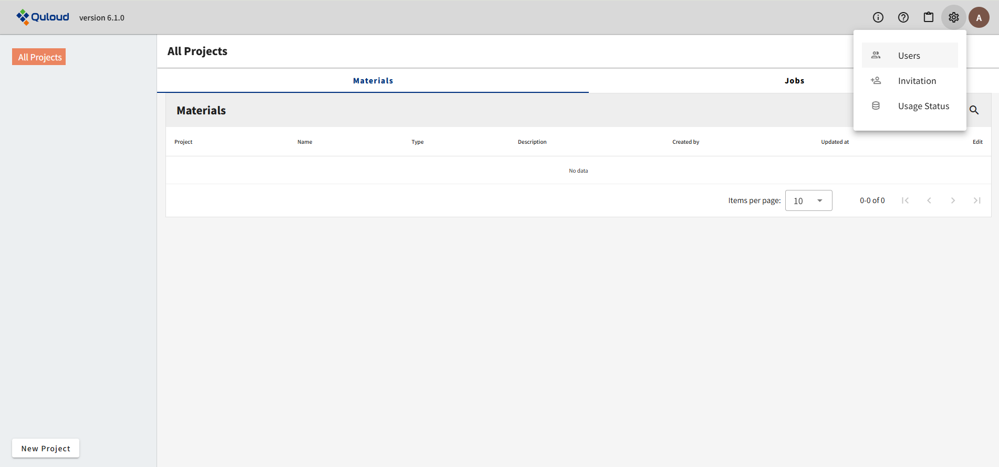すると、次のような画面に移ります。
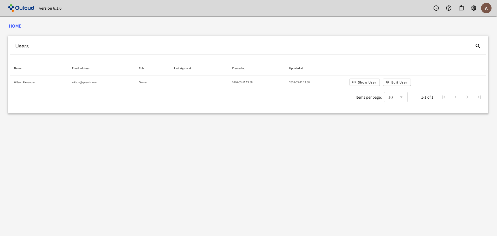サインアップ（１章参照）、サインイン（２章参照）完了直後は、所属する Tenant のユーザーは本人のみとなっています。 ここに新規ユーザーを追加するための方法を以下で説明します。
3.1. 新規ユーザーの招待方法
トップ画面で、ヘッダー部の歯車のアイコンをクリックし、「Invitation」をクリックします。
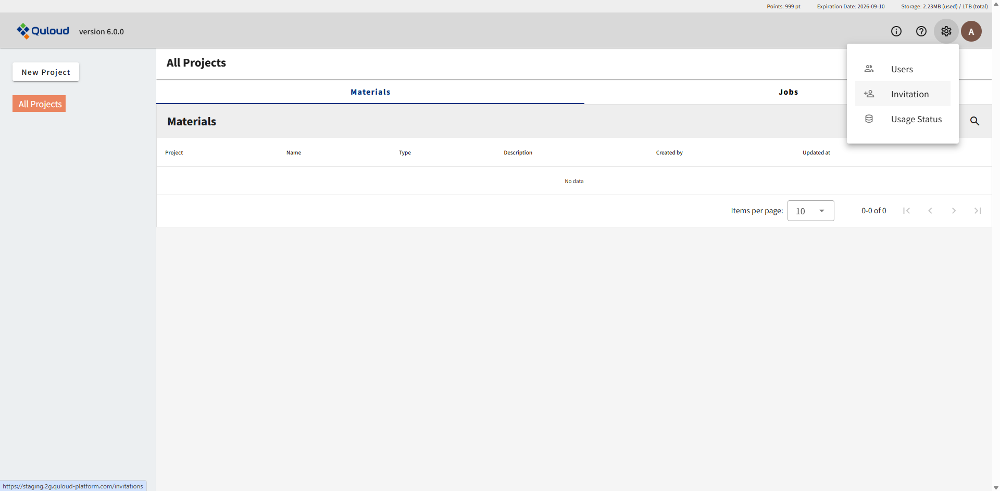すると、下図のような画面が表示されます。
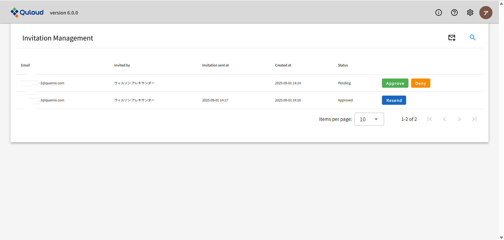ここで、管理ユーザーは新たなユーザーを Tenant のメンバーとして招待することができます。 右上の手紙のアイコンをクリックすると、招待したいユーザーのメールアドレス入力欄が表示されます。
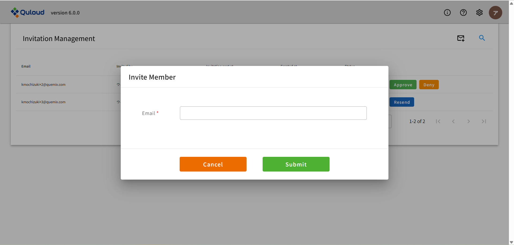上図で招待したいユーザーのメールアドレスを入力し「Submit」を押すと、追加したいメンバーのメールアドレスを登録することができます。
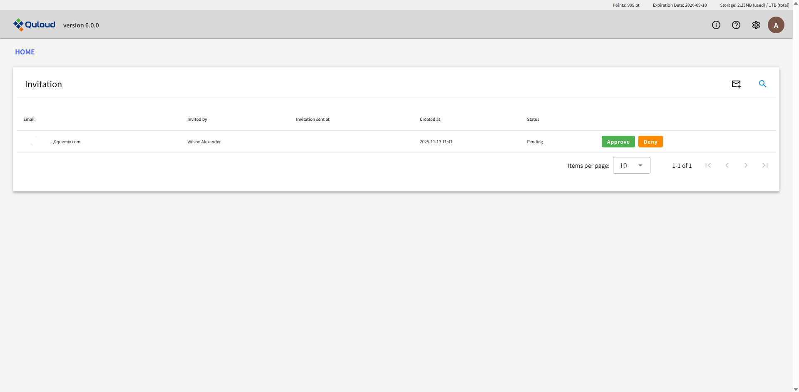登録後「Approve」ボタンを押したタイミングで、実際に招待メールが登録したアドレスに送付されます。
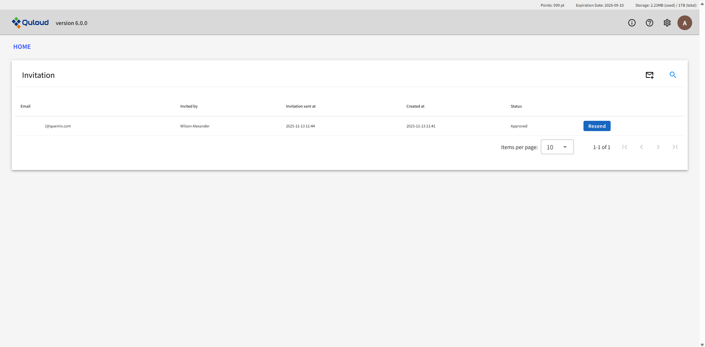「Resend」ボタンを押すと、招待メールがもう一度送付されます。
3.2. 招待された新規ユーザーのサインアップ
次に、招待メールを受信したユーザーが Tenant に加入するための方法を説明します。 招待メールの中身は下図の通りです。
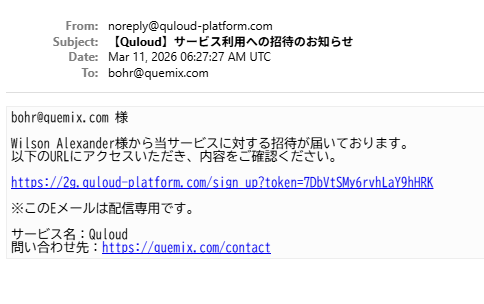メール本文の URL をクリックすると、次のようなページに移ります。
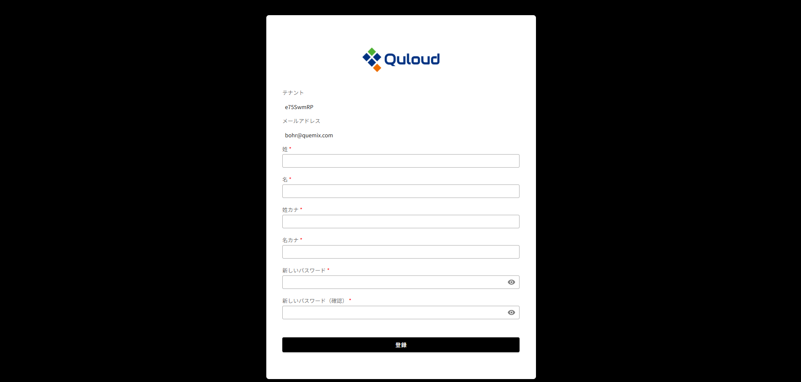ここで、新規ユーザーのサインアップを行います。名前とパスワード（新たに設定）をフォームに入力します。
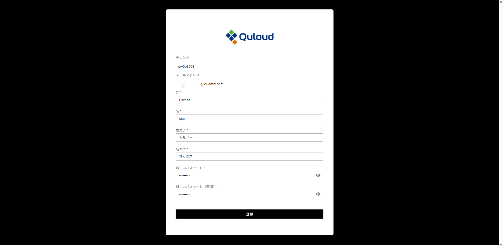「登録」ボタンを押すと、２章で説明したサインイン画面に移ります。
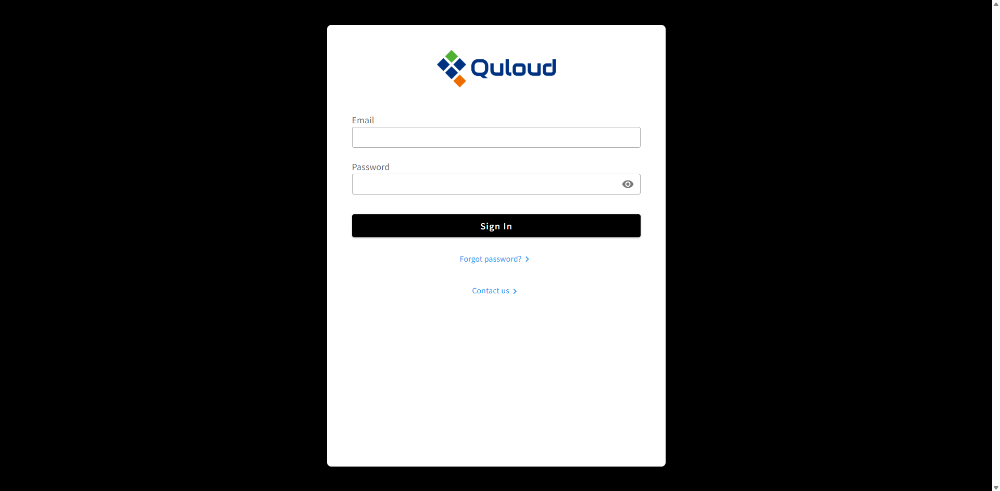ここにメールアドレスと、先ほど設定したパスワードを入力します。
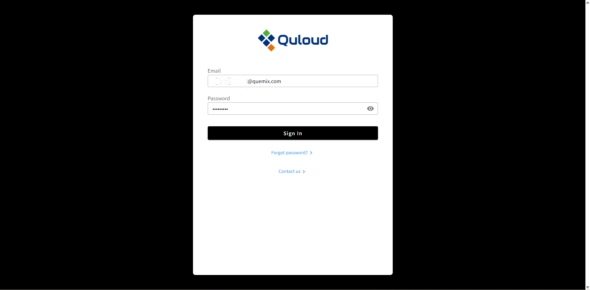「Sign In」ボタンを押すと、Quloud のトップ画面に移ります。
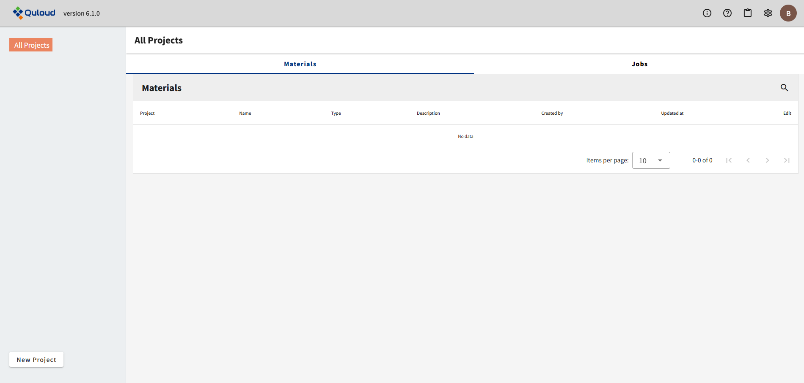ヘッダー部の歯車のアイコンをクリックし、「Users」をクリックします。

すると、Tenant に新規ユーザーが加入していることが分かります。
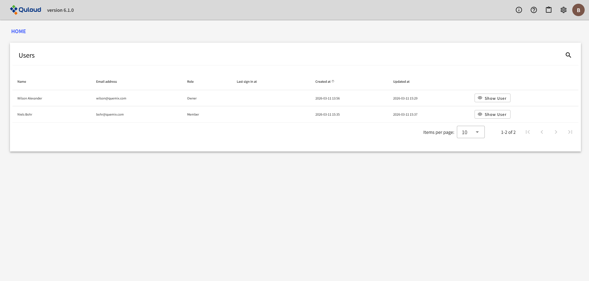